Barbarian Guide & Walkthrough
THIS PAGE CONTAINS SPOILERS, PROCEED WITH CAUTION!
Contents:
Normal Game:
Game+ Mode:
Introduction
There are multiple ways to play and enjoy Legends of Pixelia. Some players like challenging combat, some players don't. The focus of this guide is to get
through the game (including Game+ Mode) as easy as possible and the guide is directed mostly to new players. The target game version of this guide is 1.03.
I tried to avoid spoilers wherever possible.
Setup
Welcome to our journey through the many dungeons in Legends of Pixelia. To be able to enjoy our trip, we should start with some configurations.
Setup: Gamepad
If you're using a gamepad, press 'Q' on the title screen to start a gamepad config. Since hardware manufacturers didn't succed in arraging an industry
standard for gamepad button mappings, you as a customer have to suffer. I'm sorry for their stupidity.
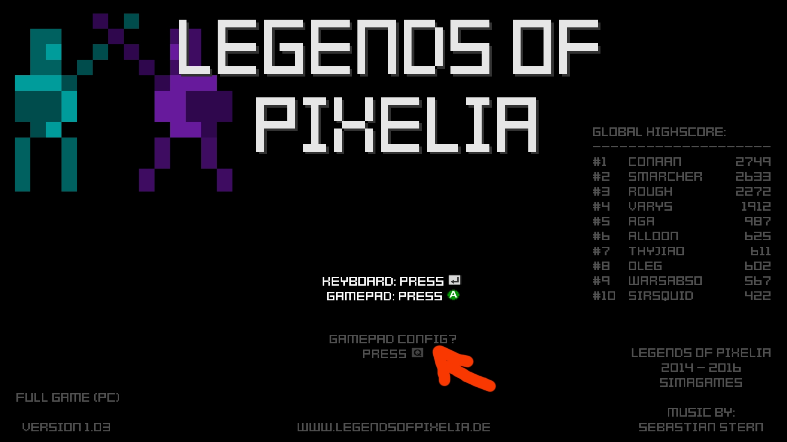
Setup: Keyboard
If you don't want to play with a gamepad, you can use your keyboard instead. In the options menu (main menu -> options), there are two different keyboard input
layouts. Choose your prefered one.
Setup: Options
Next, in the options menu (main menu -> options) we want to change the difficulty to Casual. This is important for this guide since
we're not seeking challenge here. Also, the game has been developed on a very bright display. With a regular monitor, you want to change the brightness
setting to 4. Apply changes and leave the options screen.
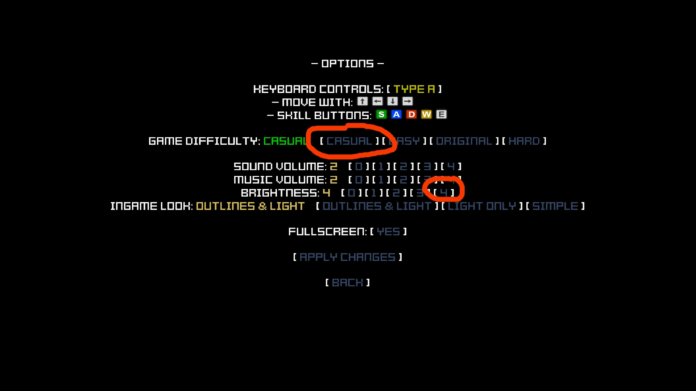
Getting Started
Now let's start! Choose Play Adventure and create a new hero. Since this a barbarian guide, we want to create a barbarian (duh :-D).
Give it a nice name (since it is displayed in the leaderboard later on), make sure that Softcore is selected and hit
Okay. I also created a barbarian while creating this guide. Mine is called Conaan (named after a famous barbarian and a
delicious Indian bread).
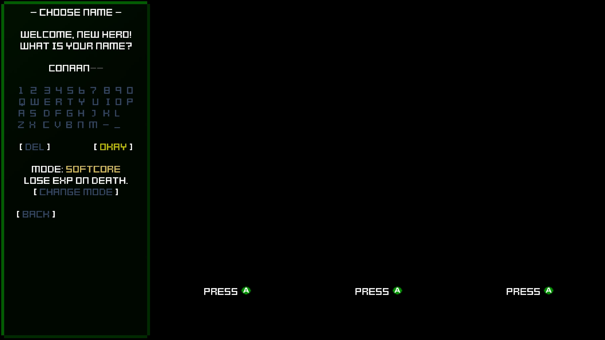
You will start in stage 1-1, a small tutorial map. The red question marks can be hit for some helpful info.
Before we go on, let's consider some general tips.
General Barbarian Tips
- The Whirlwind skill has endurance frames. While executing Whirlwind, enemy attacks can not flinch you. Use Whirlwind to escape annoying situations (e.g. when cornered, against spider webs or against packs of summoned enemies). You can move while executing Whirlwind, too!
- The Shockwave skill can hit enemies lying on the floor. Use this against normal enemies or bosses.
- Some dead end rooms contain grey angel like statues. Hit those 10 times to get some permanent stat bonuses.
- When finding new items, we always value defense rating changes twice as high as attack rating changes (e.g. we don't take items that increase attack rating by 10 but reduce defense rating by 6, since 10 - 2*6 = -2). This simple rule helps us to survive in the long run.
- When fighting bosses, focus on the normal enemies first.
- When finding epic items (which is very rare on Casual difficulty), we prefer Whirlwind effects (Y-, W-, [8]-) over defensive effects over everything else.
- In the early stages we always want to do Full Clear [FC] runs.
Farming: Full Clear [FC]
To perform a Full Clear run, abbreviated as [FC] from now on, you simply clear every room of a map before visiting the boss room.
The boss room is marked by a red/orange skull icon. When no other room is left to discover, we go to the boss room. This method is mainly used in
the early stages to gather some experience points.
Stat Point Distribution
- Level 1 to 40: Special to boost our Whirlwind skill
- Level 41 to 80: Defensive to help us survive Game+ Mode
- Level 81 to 100: Offensive to ensure well balanced damage for the endgame
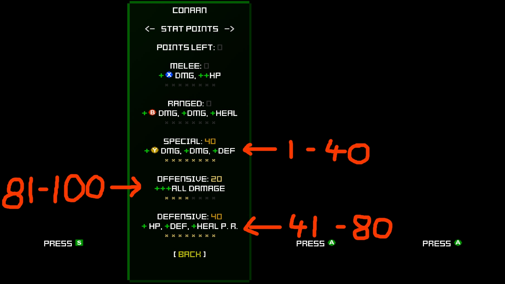
Dungeon 1 - The Crypt
- There are Spider enemies in the first dungeon that like to annoy melee heroes with their webs. Use your Whirlwind skill to be able to deal damage without being flinchable.
- Stage 1-1: As mentioned earlier, 1-1 is a tutorial stage. It should be straight forward. Do a [FC] and get your first item in the treasure room. Don't forget that we focus on defensive stats when choosing an item.
- After Stage 1-1, we can choose stat points for the first time. Check out the Stat Point Distribution (we choose Special for the first few levels).
- Stage 1-2: [FC] again. If you think that the boss is too hard on the first try, choose Restart Stage and do another [FC].
- Stage 1-3: [FC]. After beating the endboss of this dungeon, we get 2 big treasure chests and our first leaderboard entry. Woohoo!
- Don't spend gold on upgrades yet.
Conaan's progress:
| Stage |
Hero Level |
Attack Rating |
Defense Rating |
| 1-1 |
4 |
46 |
44 |
| 1-2 |
6 |
62 |
62 |
| 1-3 |
7 |
86 |
87 |
Selling Spare Items
In the preparation screen, there is an info showing INV. FULL: 0/8. If the first number is not 0, go to your
inventory and sell spare items before starting a new dungeon. Don't worry, you can't sell your currently equipped items. So if you always equip
better items when opening a big treasure chest, you can sell all spare items.
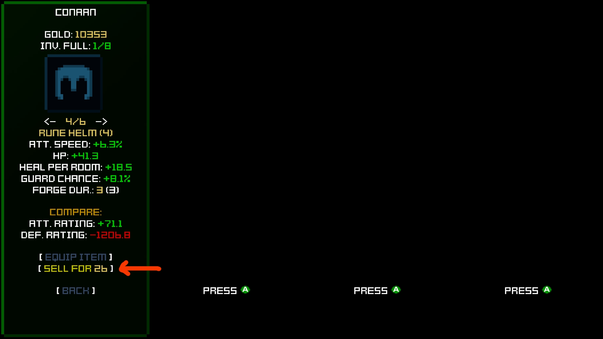
Dungeon 2 - Winged Cave
- After beating the first dungeon, we have access to the dungeon selection screen. Cool! Choose Winged Cave next.
- Check if you have spare items to sell.
- Moth Defender enemies have a blue skill shield that is sometimes hard to unlock as a barbarian. If you quickly use a Block+Shockwave combo, it's easy to guarantee that your Shockwave skill will not be canceled by enemy attacks.
- Stage 2-1: [FC].
- Stage 2-2: [FC].
- Stage 2-3: [FC].
- Don't spend gold on upgrades yet.
Conaan's progress:
| Stage |
Hero Level |
Attack Rating |
Defense Rating |
| 2-1 |
9 |
109 |
102 |
| 2-2 |
11 |
134 |
117 |
| 2-3 |
12 |
155 |
134 |
Easy Barbarian Combos
Since you managed to clear 2 dungeons, you should be attuned to the controls by now. Time for some easy combos:
- Attack to Whirlwind: Attack, Attack, Attack, Whirlwind
(Instead of pressing the Attack button three times, you can also press and hold the button.)
- Whirlwind to Attack: Whirlwind, (wait to the last frame), Attack, Attack, Attack
- Attack to Shockwave: Attack, Attack, Attack, Shockwave
- Pickup: Any air combo, (wait until enemy is lying on the floor), Shockwave
- Throw Axe to Pickup: Throw Axe, (enemy is lying on the floor), Shockwave
- Pickup Refresh: Pickup, (wait until the height of the enemy is close to your weapon), Any combo
Have fun experimenting!
Dungeon 3 - Frozen Temple
- Like every time when starting a new dungeon, check if you have spare items to sell.
- While going through this dungeon, take your time to practice some easy combos.
- Stage 3-1: [FC].
- Stage 3-2: [FC].
- Stage 3-3: [FC]. The endboss is not too easy. Try to use some combos and it shouldn't be a problem.
- Don't spend gold on upgrades yet.
Conaan's progress:
| Stage |
Hero Level |
Attack Rating |
Defense Rating |
| 3-1 |
13 |
170 |
141 |
| 3-2 |
15 |
203 |
162 |
| 3-3 |
17 |
259 |
206 |
The Scoundrel
After beating dungeon 3, we are able to buy some powerful (and expensive) artifacts at the scoundrel. You will be informed which artifacts to buy in which
dungeon, but here is a short overview:
| Artifact |
In Dungeon |
Gold Costs |
| Rigged Dice |
4 |
2777 |
| Skull Compass |
6 |
5777 |
| Bronze Ring |
6 |
1777 |
| Casino Dice |
9 |
14777 |
| Devil's Dice |
9 |
19777 |
| Silver Ring |
10 |
5777 |
| Gold Ring |
11 |
9777 |
| Mithril Ring |
11 |
13777 |
| Canting Halo |
13 (optional) |
11777 |
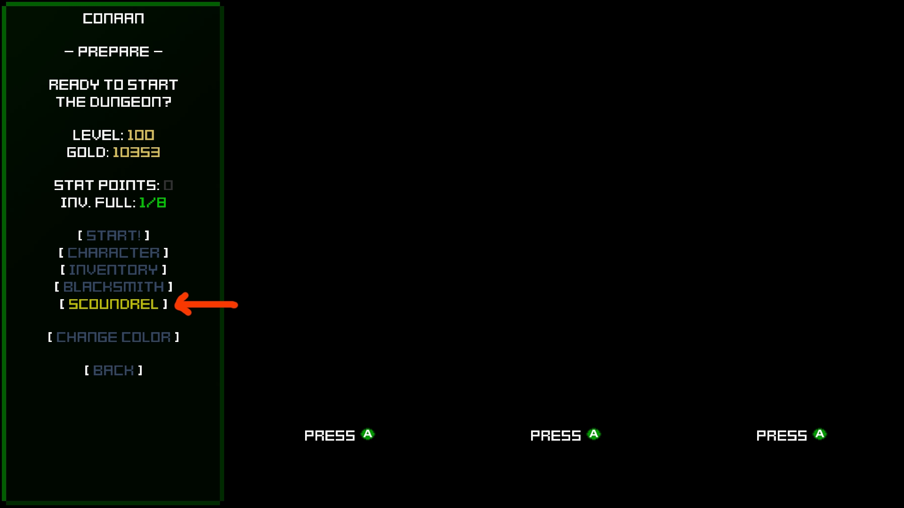
Blacksmith: Upgrading Items
Since the difficulty is starting to grow in dungeon 4 and beyond, we want to upgrade our equipped items. In the preparations screen, go to the Blacksmith.
Here you can pay some gold in order to increase the quality of your equipped items.
The attribute FORCE DUR. indicates how many upgrades are left for the item, the value in brackets shows the total maximum for the item. In this guide,
we rarely upgrade items completely. Instead, we only upgrade items a few times to save gold.
Desired item upgrade levels by dungeon:
| Dungeon |
Item Type |
Upgrade Level |
| 1 to 3 |
Normal |
- |
| 4 to 11 |
Normal |
2 |
| 12 to 13 |
Normal |
4 |
| 14 |
Normal |
MAX |
| 1 to 8 |
Epic |
- |
| 9 to 14 |
Epic |
MAX |
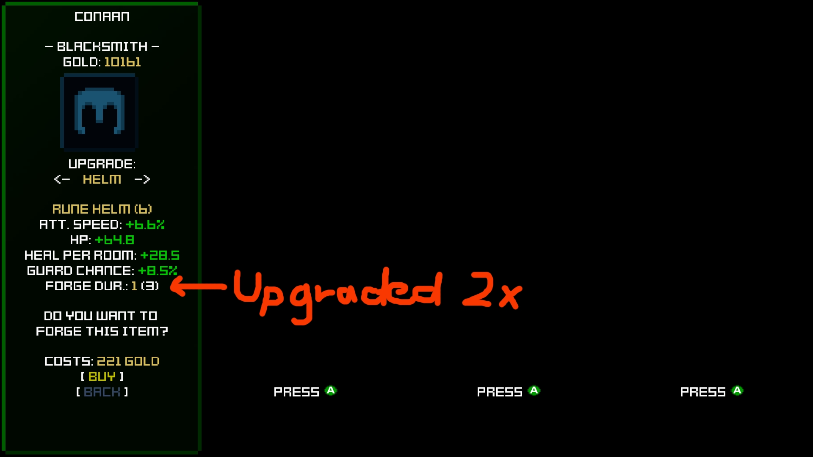
Farming: Treasure Run [TR]
To perform a Treasure Run, abbreviated as [TR] from now on, you repeat the current stage multiple times trying to find as many new items and statues as possible.
For maximum efficiency, we try to find the treasure room as quick as possible. After clearing the treasure room, we choose Restart Stage (Prepare) in the
pause menu and start over. "[TR] to level X" means that you should repeat doing Treasure Runs in the current stage until your hero is level X. Go to
the boss room afterwards.
Dungeon 4 - Gaia Tree
- Blacksmith: Since the game is slowly getting harder, from now on we upgrade normal items up to 2 times.
- Like every time when starting a new dungeon, check if you have spare items to sell.
- Stage 4-1: [FC].
- Stage 4-2: Treasure Run time! [TR] to level 20.
- Stage 4-3: [TR] to level 23.
Conaan's progress:
| Stage |
Hero Level |
Attack Rating |
Defense Rating |
| 4-1 |
18 |
299 |
245 |
| 4-2 |
20 |
381 |
260 |
| 4-3 |
23 |
507 |
283 |
Dungeon 5 - Flying Castle
Conaan's progress:
| Stage |
Hero Level |
Attack Rating |
Defense Rating |
| 5-1 |
25 |
522 |
343 |
| 5-2 |
27 |
550 |
397 |
| 5-3 |
31 |
623 |
498 |
Dungeon 6 - Hell
- Like every time when starting a new dungeon, check if you have spare items to sell.
- Fire & Flame enemy types explode on death. Outch! Try to use Throw Axe to finish them or save healing potions from earlier rooms to heal later on.
- Stage 6-1: [TR] to level 33.
- Stage 6-2: [TR] to level 36.
- Stage 6-3: [TR] to level 40. By reaching level 40, we gain a Whirlwind skill charge. Time for some crazy Whirlwind action. Woop woop!
- Scoundrel: You should be able to buy the Skull Compass during dungeon 6. This artifact is really helpful for [TR] since it shows the location of the boss room (we want to go in the opposite direction). Next up is the Bronze Ring for some experience bonus.
- Blacksmith: Upgrade normal items up to 2 times.
Conaan's progress:
| Stage |
Hero Level |
Attack Rating |
Defense Rating |
| 6-1 |
33 |
673 |
534 |
| 6-2 |
36 |
780 |
571 |
| 6-3 |
40 |
1052 |
639 |
Dungeon 7 - The Void
- Like every time when starting a new dungeon, check if you have spare items to sell.
- Dungeon 7 should be easy due to our Whirlwind charge. :-)
- From now on, bosses can't be flinched or comboed anymore. This might hurt some other hero classes or builds, but since we focused on Whirlwind it shouldn't be too much of a problem.
- From level 41 on, we choose Defensive stat points.
- Stage 7-1: [TR] to level 42.
- Stage 7-2: [TR] to level 45. The boss can be handled easily by standing above or below it and using Whirlwind only.
- Stage 7-3: [TR] to level 48. The final battle consists of multiple bosses that can be spawned manually by killing a rune. Only spawn one boss at a time and be careful not to hurt the other runes by accident while trying to kill it. After killing a boss you are healed by an amount based on your maximum HP and your Heal per Room stat.
- Blacksmith: Upgrade normal items up to 2 times.
Gratulations, you made it through Legends of Pixelia in normal mode.
Unlucky Conaan didn't find a single epic item in normal mode... :-(
Progress:
| Stage |
Hero Level |
Attack Rating |
Defense Rating |
| 7-1 |
43 |
1197 |
694 |
| 7-2 |
45 |
1212 |
775 |
| 7-3 |
48 |
1236 |
834 |
Game+ Mode - A Word of Caution
The real fun starts in Game+ Mode and I really suggest that you should try to beat it. But, in order to be able to survive in Game+ Mode, we start to
grind more and more. If you really hate grinding in games, consinder if you want to continue your journey or if you want to stop here. ;-)
Farming: Boss Run [BR]
To perform a Boss Run, abbreviated as [BR] from now on, you need to be in the last stage of a dungeon. The dungeon endboss always drops 2 big treasure
chests and is easily spottable due to the Skull Compass. Also, boss kills give some nice experience points. The main idea is to go directly to the boss,
kill it, loot both big treasure chests (ignoring the coins) and NOT to exit the dungeon through the portal, but to choose
Restart Stage (Prepare) in the pause menu instead. This way, we are able to repeat the endboss fight multiple times in a row. "[BR] to level X"
means that you should repeat doing Boss Runs until your hero is level X. Leave the dungeon afterwards.
Epic Item Drop Chance
Epic items are super rare. Epic items are super powerful. Epic items can be farmed with a guaranteed drop if you're persistent enough. So, let's have a
look at how the epic item drop chance is working in Legends of Pixelia.
When entering a dungeon, a stack of 60 cards (in Casual difficulty) is shuffled randomly. 59 out of the 60 cards are "normal item drop" cards, one card
is an "epic item drop" card. Every time you open up a big treasure chest, the top card is drawn. This way, the first item per dungeon run has a chance
of 1/60 to be epic, the second items has a chance of 1/59 to be epic, etc. So if we're very unlucky, we need to open up 59 big treasure chests with normal
items until we find our guaranteed epic item. After finding an epic item, the stack with all 60 cards is shuffled again.
The three dice artifacts all increase the epic item chance by removing "normal item drop" cards from the stack; Rigged Dice remove one card, Casino Dice
and Devil's Dice remove two cards each. Also, after buying a dice artifact, the stack is shuffled again - don't buy one when you just opened up 20 (or more)
normal item big treasure chests!
[BR] are the most effective way to farm epic items in Game+ Mode, since you get 2 big treasure chests for each kill. In addition to this, finding the treasure
room becomes more and more complicated in Game+ Mode since the dungeon size increases steadily. In Casual difficulty, we need 30 [BR] for a guaranteed epic item.
The chosen difficulty also affects the item drop stack size. Here's a table:
| Difficulty |
Item Drop Cards |
/w All Dice Artifacts |
[BR] for 100% drop |
| Casual |
60 |
55 |
30 (28) |
| Easy |
45 |
40 |
23 (20) |
| Original |
30 |
25 |
15 (13) |
| Hard |
20 |
15 |
10 (8) |
In my opinion it's easier (and faster) to do 30 [BR] on Casual difficulty than it is to do 15 on Original difficulty.
Dungeon 8 - Mausoleum
- Like every time when starting a new dungeon, check if you have spare items to sell.
- Stage 8-1: [TR] to level 51. The boss introduces a new defensive mechanic: Skill shield roulette. Since you finished 7 dungeons by now, you should've learned the colors of your skills.
- Stage 8-2: [TR] to level 54.
- Stage 8-3: [BR] until we own 35000 gold. This will take some time, but since we're doing > 30 [BR], we find at least one epic item! Also, the 60ish normal items help building up some defensive stats that will come in handy in Game+ Mode.
- Blacksmith: Upgrade normal items up to 2 times or save the gold to reach the 35000 faster.
Conaan's progress:
| Stage |
Hero Level |
Attack Rating |
Defense Rating |
| 8-1 |
51 |
1245 |
967 |
| 8-2 |
54 |
1365 |
1035 |
| 8-3 |
62 |
1406 |
1902 |
Conaan was lucky enough to find 2 epic items while doing [BR]: Some Guardian's Wrist gloves and a pair of Cuatro boots.
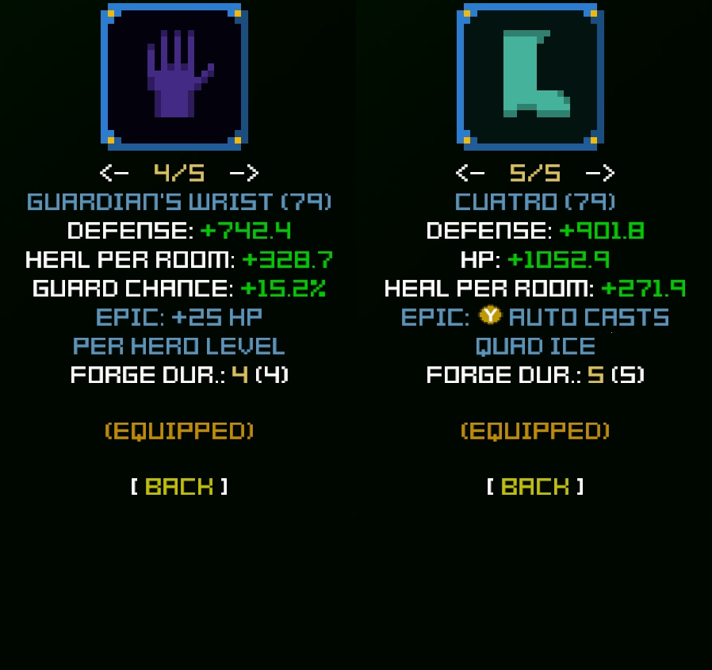
Dungeon 9 - Storm Cave
- Scondrel: Before doing anything else, visit the Scoundrel and buy the Casino Dice (selecting Whirlwind damage and cooldown reduction) and the Devil's Dice (selecting defense). That's why we saved 35000 gold in dungeon 8. More epics, more defense, more Whirlwind damage (which is our main damage source for a big part of Game+ Mode).
- Like every time when starting a new dungeon, check if you have spare items to sell.
- Since we did lots of farming in dungeon 8, this one should be piece of cake.
- Stage 9-1: Go directly to the boss.
- Stage 9-2: Go directly to the boss.
- Stage 9-3: [TR] or [BR] to level 66. I decided to do [BR] with Conaan since the newly found Cuatro boots deal tons of damage against bosses.
- Blacksmith: Upgrade normal items up to 2 times. Upgrade all epic items to maximum from now on.
Conaan's progress:
| Stage |
Hero Level |
Attack Rating |
Defense Rating |
| 9-1 |
62 |
1406 |
1902 |
| 9-2 |
63 |
1412 |
1917 |
| 9-3 |
66 |
1431 |
2066 |
Dungeon 10 - Cold Nightmare
- Like every time when starting a new dungeon, check if you have spare items to sell.
- Leveling progress is getting slower here, but don't worry. We'll be close to level 100 soon. :-)
- Stage 10-1: [TR] to level 69.
- Stage 10-2: [TR] to level 72. Be careful when fighting the boss here. Its bombs really hurt!
- Stage 10-3: [TR] or [BR] to level 75. I slightly lean towards [TR] here since the boss takes some time to be killed. If you've found some strong boss killer epic items, go for [BR].
- Blacksmith: Upgrade normal items up to 2 times. Upgrade all epic items to maximum.
- Scondrel: When all of your epic items are upgraded to maximum, visit the Scoundrel to buy a Silver Ring (Woohoo, more exp!).
Conaan's progress:
| Stage |
Hero Level |
Attack Rating |
Defense Rating |
| 10-1 |
69 |
1466 |
2356 |
| 10-2 |
73 |
1521 |
2583 |
| 10-3 |
75 |
2556 |
2468 |
Conaan has found another epic item here: A Cruelty axe with nice stats on it. Since this item scales heavily with critical hit chance,
I changed the Casino Dice to crit chance.
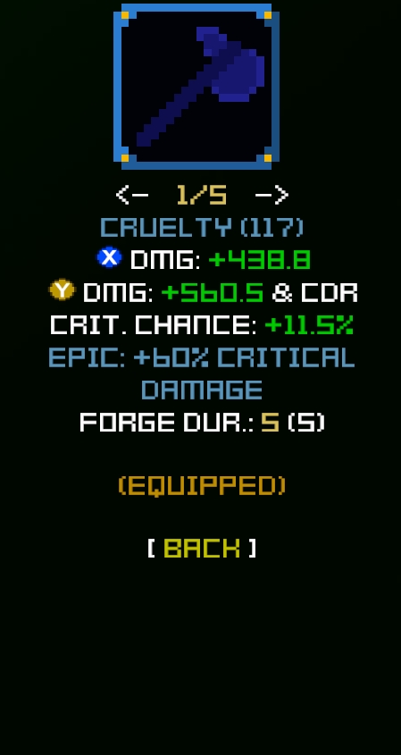
Dungeon 11 - Mana Tree
- Like every time when starting a new dungeon, check if you have spare items to sell.
- Scondrel: To counter the decreasing leveling speed, we want to buy the Gold Ring and the Mithril Ring during this dungeon.
- Stage 11-1: [TR] to level 78.
- Stage 11-2: [TR] to level 81.
- From level 81 on, we choose Offensive stat points.
- Stage 11-3: [BR] to level 86 AND Mithril Ring bought. The endboss here is easily farmable with this barbarian build. Also, the next dungeon is kinda tricky for melee heroes, so lets try to minimize the time spent there.
- Blacksmith: Upgrade normal items up to 2 times. Upgrade all epic items to maximum.
Conaan's progress:
| Stage |
Hero Level |
Attack Rating |
Defense Rating |
| 11-1 |
78 |
2670 |
2604 |
| 11-2 |
81 |
3162 |
3341 |
| 11-3 |
86 |
3249 |
3504 |
Conaan didn't find a single epic item in dungeon 11. Fingers crossed that you are more lucky!
Dungeon 12 - Sky Palance
- Like every time when starting a new dungeon, check if you have spare items to sell.
- Lots of abyss on the ground in combination with flying enemies. Bleh!
- Stage 12-1: Go directly to the boss.
- Stage 12-2: [TR] to level 89.
- Stage 12-3: [BR] to level 92.
- Blacksmith: Since the game is getting harder and all important artifacts have been bought, we start to upgrade normal items up to 4 times now. Upgrade all epic items to maximum.
Conaan's progress:
| Stage |
Hero Level |
Attack Rating |
Defense Rating |
| 12-1 |
87 |
3262 |
3522 |
| 12-2 |
89 |
3415 |
3638 |
| 12-3 |
92 |
3512 |
3994 |
Endgame Preparations
So, 2 dungeons left. Time to start preparations for the upcoming challenges.
- Defensive stats are still very important.
- We no longer want to focus on Whirlwind as our main damage source. Instead, take a look at your character info screen and try to boost your weaker skills. A super powerful Whirlwind alone won't help against the final boss.
- Scoundrel: Change the Devil's Dice stat choice from defense to all damage. The all damage stat is a must-have on non-epic items from now on.
- The Attack Rating comparison value when finding new items no longer matters to us. We don't want the highest total damage anymore, we want all of our skills to be balanced out damage wise.
- Since the dungeons start to become bigger and bigger, the Skull Compass starts be to less effective. In the image below I took 2 screenshots of Skull Compass fails while trying to do [BR] (the white dot marks the start room).
Dungeon 13 - Green Hell
- Like every time when starting a new dungeon, check if you have spare items to sell.
- Level ups are taking longer now, expect to spend some time in this dungeon...
- We're entering endgame, prepare yourself accordingly!
- Stage 13-1: [TR] to level 94.
- Stage 13-2: [TR] to level 95.
- Stage 13-3: Lots of [BR]. This is the best place to farm endgame epic items and also a nice one to grind to level 100. We don't want to leave this place unless our hero is at level 100 with around 3000 to 3500 attack/defensive rating and quite balanced skill damages on your character screen.
- Blacksmith: Upgrade normal items up to 4 times. Upgrade all epic items to maximum.
- Scondrel: If you're feeling generous, buy the Canting Halo. For a Softcore Casual hero, this item is totally optional.
Conaan's progress:
| Stage |
Hero Level |
Attack Rating |
Defense Rating |
| 13-1 |
94 |
5592 |
3220 |
| 13-2 |
95 |
6367 |
3372 |
| 13-3 |
100 |
7211 |
3505 |
Conaan's skill damage change:
| Before Dungeon 13 |
After Dungeon 13 |
| A: 601 |
A: 1417 |
| X: 1093 |
X: 3690 |
| B: 596 |
B: 4156 |
| Y: 2005 |
Y: 3473 |
Conaan did find 2 epic items here: A pair of Viper gloves with nice stats boosting his weak spots and a
Storm's Guard with nice stats but a nearly useless epic effect (when running high defensive stats).
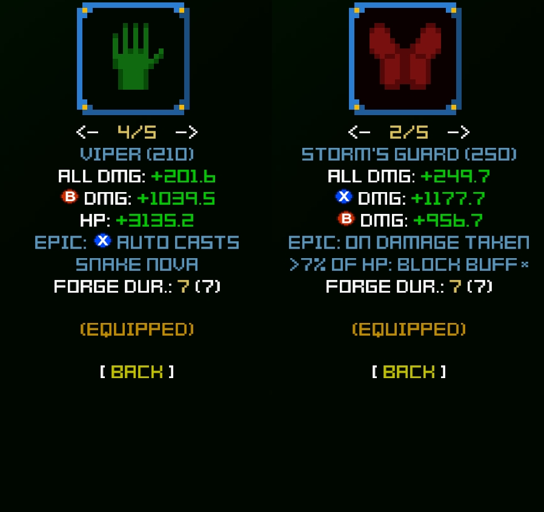
Dungeon 14 - Neither Zone
- Stage 14-1: Go directly to the boss. Skill shield roulette again. ^_^
- Stage 14-2: Go directly to the boss. The boss is slow but powerful, be careful.
- Stage 14-3: [TR] until you feel ready. Collect statues and normal items for your non-epic items slots. The last boss should be easy with around 4000 attack/def rating and damage nicely balanced across all skills. When you're finished with [TR], invest all of your money in item upgrades.
- The final boss mechanic has some similarities to the dungeon 7 endboss fight. Check out that chapter if you forgot about it.
- Each of the 4 bosses is only vulnerable against one of your skills. Since you are following this guide, each of your skills is dealing some nice damage. I'd suggest the following order: green, yellow, red, blue. Green is a good starter since your HP should be high (or full) when entering the boss room. The summons of green are vulnerable to all skills. Yellow should be easy with this build, take the chance to heal up after the kill. Red deals some high melee damage. Since our throwing axe is ranged, try to avoid being too close to it. Blue might be tricky. Try to use the Block+Shockwave combo and try to be on a vertical line with it during cooldowns.
Congrats, you beat Game+ Mode!
Conaan's progress:
| Stage |
Hero Level |
Attack Rating |
Defense Rating |
| 14-1 |
100 |
7211 |
3884 |
| 14-2 |
100 |
7211 |
3884 |
| 14-3 |
100 |
7211 |
3884 |
Final Words
I enjoyed the playthrough and I really hope that you did, too! It was a fun experience and I played carefully enough to beat the game with 0 deaths. ^_^
The build worked out quite nice and I had some lucky epic item drops but at the end of the day, the Barbarian still isn't my favorite hero in Legends of Pixelia.
But maybe it is your favorite hero class now?
Here are the final stats and items of Conaan:
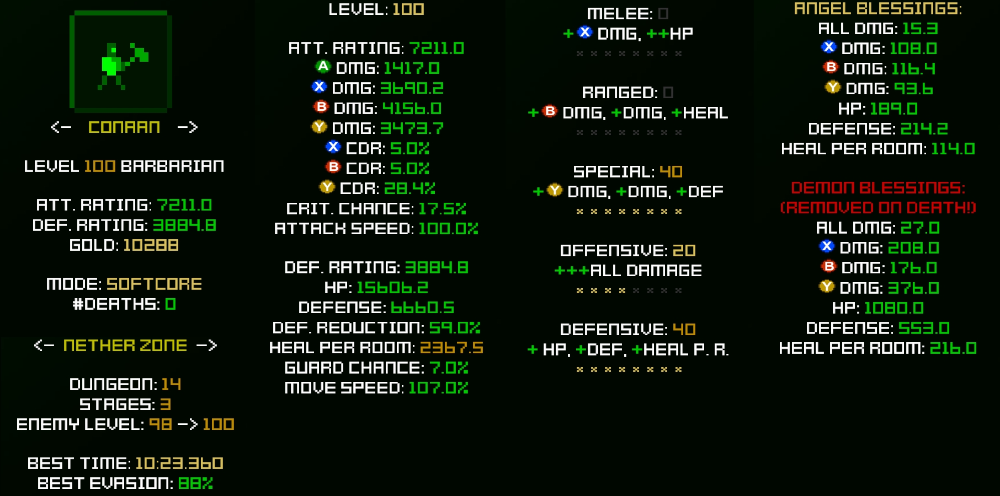
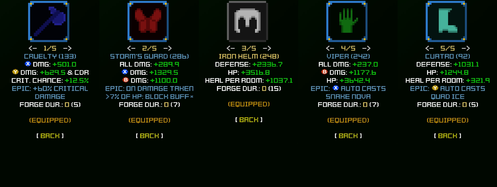
Any question or comments? Feel free to discuss in the SimaGames Discord community. :-)